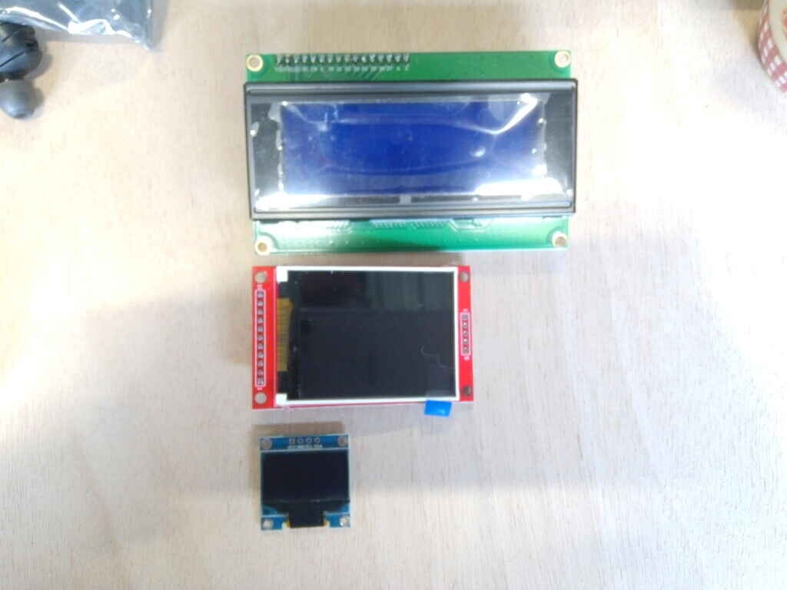
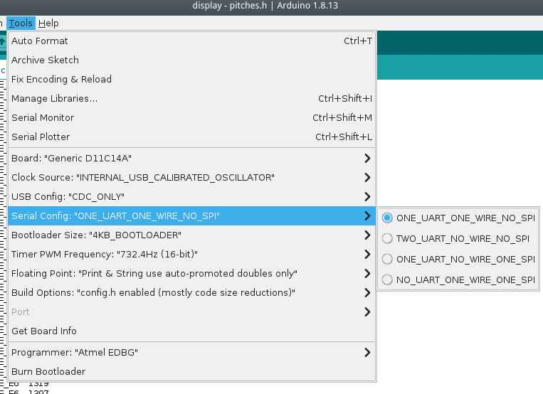
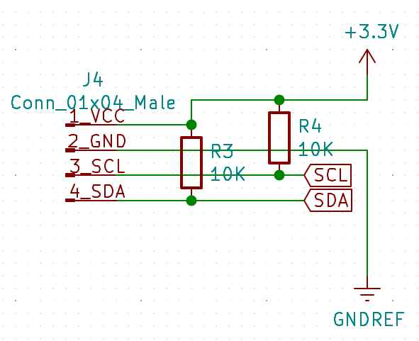
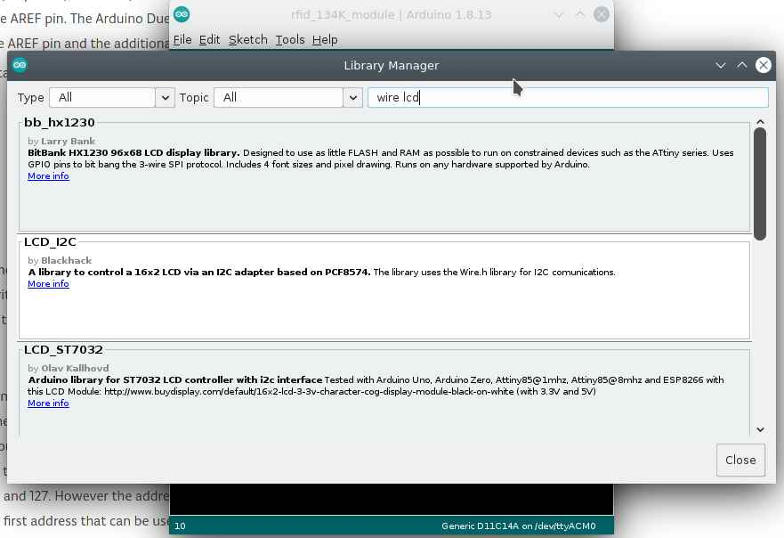
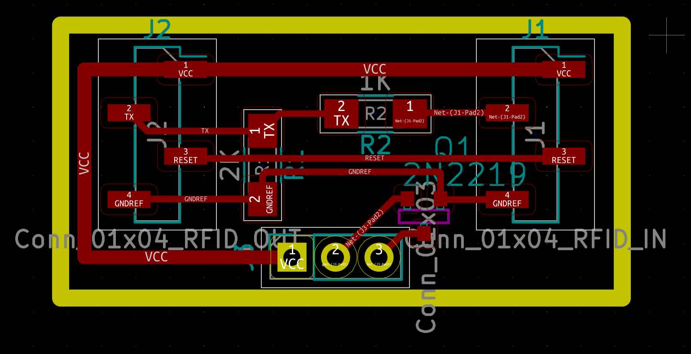
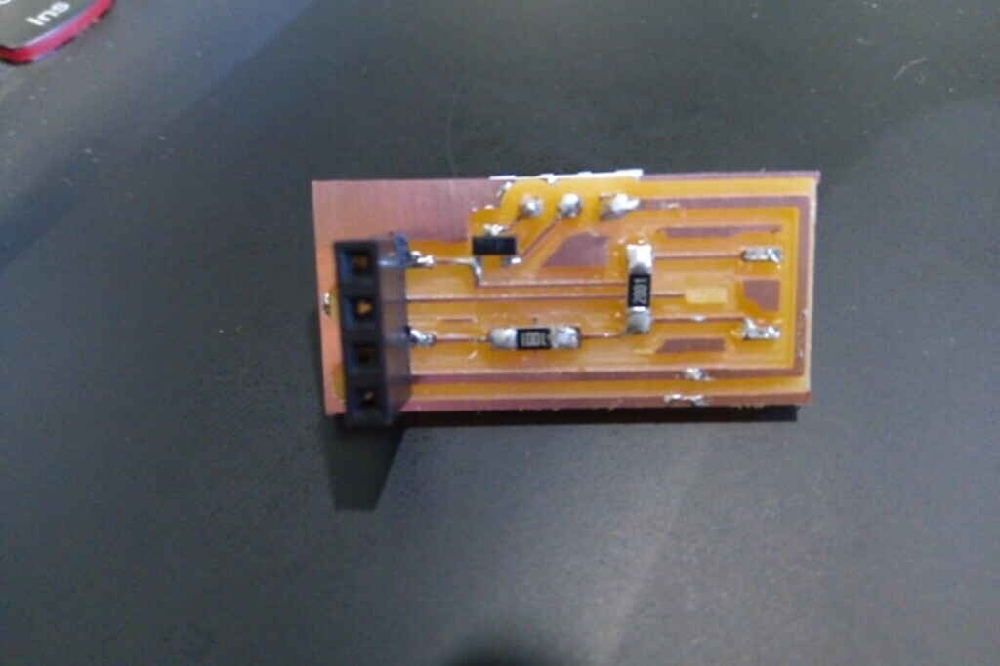

13. Output Devices¶
Introduction¶
This week I’ve started to use output devices that are part of my device for the final project.
For this week I’ve used my board from week11, input devices based on the ATSAMD11 micro-controller.

- A Speaker to make a sound after a RFID successful read.
- A LCD display to show information relative to the milk production.
Then to make this possible I’ve listed here different components and concepts that were useful for me during this week work.
Possible thing to use for this week work:
- Relay
- Speaker

- LCD i2c display
- TFT display
- OLED i2c display

Also I’ve contributed to this weeks Group assignment by checking the power consumption of a display and a speaker.
Concepts I’ve explored during this week¶
Tone library for arduino¶
/*
Arduino Mario Bros Tunes
With Piezo Buzzer and PWM
Connect the positive side of the Buzzer to pin 3,
then the negative side to a 1k ohm resistor. Connect
the other side of the 1 k ohm resistor to
ground(GND) pin on the Arduino.
by: Dipto Pratyaksa
last updated: 31/3/13
*/
/*************************************************
* Public Constants
*************************************************/
#define NOTE_B0 31
#define NOTE_C1 33
#define NOTE_CS1 35
#define NOTE_D1 37
#define NOTE_DS1 39
#define NOTE_E1 41
#define NOTE_F1 44
#define NOTE_FS1 46
#define NOTE_G1 49
#define NOTE_GS1 52
#define NOTE_A1 55
#define NOTE_AS1 58
#define NOTE_B1 62
#define NOTE_C2 65
#define NOTE_CS2 69
#define NOTE_D2 73
#define NOTE_DS2 78
#define NOTE_E2 82
#define NOTE_F2 87
#define NOTE_FS2 93
#define NOTE_G2 98
#define NOTE_GS2 104
#define NOTE_A2 110
#define NOTE_AS2 117
#define NOTE_B2 123
#define NOTE_C3 131
#define NOTE_CS3 139
#define NOTE_D3 147
#define NOTE_DS3 156
#define NOTE_E3 165
#define NOTE_F3 175
#define NOTE_FS3 185
#define NOTE_G3 196
#define NOTE_GS3 208
#define NOTE_A3 220
#define NOTE_AS3 233
#define NOTE_B3 247
#define NOTE_C4 262
#define NOTE_CS4 277
#define NOTE_D4 294
#define NOTE_DS4 311
#define NOTE_E4 330
#define NOTE_F4 349
#define NOTE_FS4 370
#define NOTE_G4 392
#define NOTE_GS4 415
#define NOTE_A4 440
#define NOTE_AS4 466
#define NOTE_B4 494
#define NOTE_C5 523
#define NOTE_CS5 554
#define NOTE_D5 587
#define NOTE_DS5 622
#define NOTE_E5 659
#define NOTE_F5 698
#define NOTE_FS5 740
#define NOTE_G5 784
#define NOTE_GS5 831
#define NOTE_A5 880
#define NOTE_AS5 932
#define NOTE_B5 988
#define NOTE_C6 1047
#define NOTE_CS6 1109
#define NOTE_D6 1175
#define NOTE_DS6 1245
#define NOTE_E6 1319
#define NOTE_F6 1397
#define NOTE_FS6 1480
#define NOTE_G6 1568
#define NOTE_GS6 1661
#define NOTE_A6 1760
#define NOTE_AS6 1865
#define NOTE_B6 1976
#define NOTE_C7 2093
#define NOTE_CS7 2217
#define NOTE_D7 2349
#define NOTE_DS7 2489
#define NOTE_E7 2637
#define NOTE_F7 2794
#define NOTE_FS7 2960
#define NOTE_G7 3136
#define NOTE_GS7 3322
#define NOTE_A7 3520
#define NOTE_AS7 3729
#define NOTE_B7 3951
#define NOTE_C8 4186
#define NOTE_CS8 4435
#define NOTE_D8 4699
#define NOTE_DS8 4978
#define melodyPin 3
//Mario main theme melody
int melody[] = {
NOTE_E7, NOTE_E7, 0, NOTE_E7,
0, NOTE_C7, NOTE_E7, 0,
NOTE_G7, 0, 0, 0,
NOTE_G6, 0, 0, 0,
NOTE_C7, 0, 0, NOTE_G6,
0, 0, NOTE_E6, 0,
0, NOTE_A6, 0, NOTE_B6,
0, NOTE_AS6, NOTE_A6, 0,
NOTE_G6, NOTE_E7, NOTE_G7,
NOTE_A7, 0, NOTE_F7, NOTE_G7,
0, NOTE_E7, 0, NOTE_C7,
NOTE_D7, NOTE_B6, 0, 0,
NOTE_C7, 0, 0, NOTE_G6,
0, 0, NOTE_E6, 0,
0, NOTE_A6, 0, NOTE_B6,
0, NOTE_AS6, NOTE_A6, 0,
NOTE_G6, NOTE_E7, NOTE_G7,
NOTE_A7, 0, NOTE_F7, NOTE_G7,
0, NOTE_E7, 0, NOTE_C7,
NOTE_D7, NOTE_B6, 0, 0
};
//Mario main them tempo
int tempo[] = {
12, 12, 12, 12,
12, 12, 12, 12,
12, 12, 12, 12,
12, 12, 12, 12,
12, 12, 12, 12,
12, 12, 12, 12,
12, 12, 12, 12,
12, 12, 12, 12,
9, 9, 9,
12, 12, 12, 12,
12, 12, 12, 12,
12, 12, 12, 12,
12, 12, 12, 12,
12, 12, 12, 12,
12, 12, 12, 12,
12, 12, 12, 12,
9, 9, 9,
12, 12, 12, 12,
12, 12, 12, 12,
12, 12, 12, 12,
};
//Underworld melody
int underworld_melody[] = {
NOTE_C4, NOTE_C5, NOTE_A3, NOTE_A4,
NOTE_AS3, NOTE_AS4, 0,
0,
NOTE_C4, NOTE_C5, NOTE_A3, NOTE_A4,
NOTE_AS3, NOTE_AS4, 0,
0,
NOTE_F3, NOTE_F4, NOTE_D3, NOTE_D4,
NOTE_DS3, NOTE_DS4, 0,
0,
NOTE_F3, NOTE_F4, NOTE_D3, NOTE_D4,
NOTE_DS3, NOTE_DS4, 0,
0, NOTE_DS4, NOTE_CS4, NOTE_D4,
NOTE_CS4, NOTE_DS4,
NOTE_DS4, NOTE_GS3,
NOTE_G3, NOTE_CS4,
NOTE_C4, NOTE_FS4, NOTE_F4, NOTE_E3, NOTE_AS4, NOTE_A4,
NOTE_GS4, NOTE_DS4, NOTE_B3,
NOTE_AS3, NOTE_A3, NOTE_GS3,
0, 0, 0
};
//Underwolrd tempo
int underworld_tempo[] = {
12, 12, 12, 12,
12, 12, 6,
3,
12, 12, 12, 12,
12, 12, 6,
3,
12, 12, 12, 12,
12, 12, 6,
3,
12, 12, 12, 12,
12, 12, 6,
6, 18, 18, 18,
6, 6,
6, 6,
6, 6,
18, 18, 18, 18, 18, 18,
10, 10, 10,
10, 10, 10,
3, 3, 3
};
void setup(void)
{
pinMode(3, OUTPUT);//buzzer
pinMode(13, OUTPUT);//led indicator when singing a note
}
void loop()
{
//sing the tunes
sing(1);
sing(1);
sing(2);
}
int song = 0;
void sing(int s) {
// iterate over the notes of the melody:
song = s;
if (song == 2) {
Serial.println(" 'Underworld Theme'");
int size = sizeof(underworld_melody) / sizeof(int);
for (int thisNote = 0; thisNote < size; thisNote++) {
// to calculate the note duration, take one second
// divided by the note type.
//e.g. quarter note = 1000 / 4, eighth note = 1000/8, etc.
int noteDuration = 1000 / underworld_tempo[thisNote];
buzz(melodyPin, underworld_melody[thisNote], noteDuration);
// to distinguish the notes, set a minimum time between them.
// the note's duration + 30% seems to work well:
int pauseBetweenNotes = noteDuration * 1.30;
delay(pauseBetweenNotes);
// stop the tone playing:
buzz(melodyPin, 0, noteDuration);
}
} else {
Serial.println(" 'Mario Theme'");
int size = sizeof(melody) / sizeof(int);
for (int thisNote = 0; thisNote < size; thisNote++) {
// to calculate the note duration, take one second
// divided by the note type.
//e.g. quarter note = 1000 / 4, eighth note = 1000/8, etc.
int noteDuration = 1000 / tempo[thisNote];
buzz(melodyPin, melody[thisNote], noteDuration);
// to distinguish the notes, set a minimum time between them.
// the note's duration + 30% seems to work well:
int pauseBetweenNotes = noteDuration * 1.30;
delay(pauseBetweenNotes);
// stop the tone playing:
buzz(melodyPin, 0, noteDuration);
}
}
}
void buzz(int targetPin, long frequency, long length) {
digitalWrite(13, HIGH);
long delayValue = 1000000 / frequency / 2; // calculate the delay value between transitions
//// 1 second's worth of microseconds, divided by the frequency, then split in half since
//// there are two phases to each cycle
long numCycles = frequency * length / 1000; // calculate the number of cycles for proper timing
//// multiply frequency, which is really cycles per second, by the number of seconds to
//// get the total number of cycles to produce
for (long i = 0; i < numCycles; i++) { // for the calculated length of time...
digitalWrite(targetPin, HIGH); // write the buzzer pin high to push out the diaphram
delayMicroseconds(delayValue); // wait for the calculated delay value
digitalWrite(targetPin, LOW); // write the buzzer pin low to pull back the diaphram
delayMicroseconds(delayValue); // wait again or the calculated delay value
}
digitalWrite(13, LOW);
}
Source: Arduino.cc
2N2222 Transistor¶
I’ve used the 2N2222 which is a multipurpose NPN transistor for low power amplification.
- For testing I’ve used the T0-92 form
- In my SMD circuit the SOT-23 form.
Datasheets:

I’ve used this on my speaker circuit for amplification.
Voltage divider¶
from Sparkfun’s tutorial’s page
https://learn.sparkfun.com/tutorials/voltage-dividers/all
“A voltage divider is a simple circuit which turns a large voltage into a smaller one. Using just two series resistors and an input voltage, we can create an output voltage that is a fraction of the input. Voltage dividers are one of the most fundamental circuits in electronics. If learning Ohm’s law was like being introduced to the ABC’s, learning about voltage dividers would be like learning how to spell cat.”
Why do I need this?
The RFID board that I’m using for my project uses 5 to 9 Volts for power source, while my projects micro-controller with the SAMD11E17 needs only 3.3 Volts.

It means that to use this board with the UART Serial Communication Protocol, I need to connect the PIN_31 (RX) of my micro-controller to the TX pin of the RFID board.
So I need to convert from 5 to 3.3 Volts using a Voltage divider.
My current voltage divider configuration works using a 2k Ohms and 1 k Ohms resistors in a configuration like this.

Formula:

PWM¶
Reference from https://learn.sparkfun.com/tutorials/pulse-width-modulation/all
PWM stands for Pulse-Width-Modulation and it’s a way to process output signals to use it for digital control. It is used for processes like dimming for RGB LED control, and current/ voltage for speed motor control.
One important thing to know and remember its the “Duty Cycle”, it depends in the percentage of time that a signal is High or LOW in a period of time.
For a 5 Volts circuit, if I use 0.1 seconds (10 Hz) for “Period of time” and the output is 5 Volts for every 0.05 seconds my duty cycle will be equal to 50%. If the output is High for 0.025 seconds the Duty Cycle will be 25%. And if its High for 0.06 seconds the Duty Cycle will be 60%.
Sound and tones¶
The tone() function in the arduino library generates a square wave of the specified frequency (and 50% duty cycle) on a pin. A duration can be specified, otherwise the wave continues until a call to noTone(). The pin can be connected to a piezo buzzer or other speaker to play tones.
Only one tone can be generated at a time. If a tone is already playing on a different pin, the call to tone() will have no effect. If the tone is playing on the same pin, the call will set its frequency.
I’ve used this to produce a note C8 with the speaker. See the value 4186 in the tone() function.
Pull-up resistors¶
A pull-up resistor is an circuit arrangement to solve floating input signals.
The Pin is connected to the Voltage source in this case 3.3 Volts. And it’s used for the i2c SDA and SCL inputs. Without this pull resistors the i2c communication doesn’t work.
Source Sparkfun tutorials
i2c protocol¶
i2c is a protocol that improves features from UART and SPI, its useful is you want to connect multiple devices using only 2 wires. An important remark is that every device that uses i2c has an hexadecimal “address” in this case I’m using 0x27 and I’ve find this in the LCD i2c documentation.
SAMD11C14 MUX table¶
Under the Arduino IDE we can select the number and types of com protocols to be used in our program and bootloader. To understand this more in detail I had to check the MUX table in the ATSAMD11 documentation.



Programming process¶
I’ve used Arduino and the generic bootloader for SAMD11C14 microcontrollers provided by Mattairtech.
To flash the bootloader I’ve used the same procees covered on my week09 embeded programming assignment.

To flash my board I’ve selected this options:


Speaker¶
For this I’ve used as inspiration the access door of Agrilab the access door works by RFID when the ID is scanned it gives feedback by blinking a Green light and producing the following sound shown in the Test section.
I’ll like to use the tone library to make a beep sound after scanning an RFID tag.
Test¶
Circuit¶
This is the circuit I’ve designed to drive a 2 Watts speaker using my SAMD11C14 board from week11, since the voltage output and current of the SAMD11C14 its limited to 1.63 to 3.63 Volts depending on power operation input on my case is 3.3 Volts to amplify the sound out of the speaker I’ve used a 2N2222 general purpose transistor.
I’m amplifying current and voltage since the Positive Pin to the speaker its connected to 5V and the micro-controller runs at 3.3 V.
The pin PA_05 of my SAMD11C14 board is connected to the BASE Pin of the 2N2222 transistor. The Collector pin is connected to the GROUND of the power source and the Emitter to the GROUND pad of the speaker.

BOM:
| Component | ID | form factor |
|---|---|---|
| General purpose transistor 2N2222 | Q1 | SOT23 |
| Generic 2W speaker | LS1 | * |
Code¶
This code works by repeating every second the function beep(). The function beep() works by producing a tone with value 4186 equivalent to the musical note C8 on the pin PA_05 of my SAMD11C14 board with a duration of 85.5 milliseconds.
//This code produces a "beep" every one second.
// Pin 5 is the output
// It uses the tone function that produces a square signal with a duty cycle depending in the frequency of the tone.
// Autor: Antonio de Jesus Anaya Hernandez
// FabAcademy 2021
// Lab: Agrilab
// Country: France
void setup() {
}
void loop() {
delay(1000);
beep();
}
//This function produces a "beep" using Tone function in pin 5.
void beep(){
tone(5, 4186, 85.5);
delay(85.5);
tone(5, 4186, 85.5);
delay(85.5);
noTone(5);
}
Demo¶
This is the final result.
LCD Display¶
To show information processed by my SAMD11C14 microcontroller I’ve used a generic 24 x 4 display that I’ve found in Agrilab’s Electrolad inventory.

Specifications:
- 20 x 4 Display area symbols.
- Interfaced by i2c with the PCF8574T microcontroller.
- Symbol size 2.96 * 4.75 mm.
- Blue backlight.
- White text color.
In the future I’ll use the display to show the information of the Scanned RFID animals tags scanned by my device.
Circuit¶
The i2c communication protocol of the display, uses SDA and SCL pins. This circuit integrates pull-up resistors on pins SDA (PA_14) and SCL PA_15 to avoid floating point noise. This noise interferes with the digital information and makes the screen unusable.
I’ve realized the need for pull-up resistors after connecting the display directly to the SDA and SCL pins of my board and findout the display not working. After debugging I’ve googled possible cause of the issue and found the answer at Sparkfuns i2c tutorial.
I’ve covered the information about pull-up resistors here.

Code¶
I’ve found a code example for i2c displays here.
Every i2c device has a particular address I’ve found the address in the package of the LCD display 0x27.
This code works by first including the Wire library.
This is the library at arduino library manager:

Pick the second option for PCF8574 microcontrollers
Then calling the LiquidCrystal_I2C library, that’s included in the download, using 20x4 as size and the address 0x27.
In the Setup the Wire protocol its initilized, the lcd its initialized, the cursor in the screen its set to the coordinates (1,1) it means the first square of the top left cell, and finalizes by printing Hello on one cell per letter starting from (1,1).
In the Loop the lcd turns on the backlight, sets the cursor at the cell (1,2), prints “World” for one second, turns off the backlight for one second and repeats the process.
I’ve used this as a blinking example.
//This code uses:
// LiquidCrystal_I2C and Wire library.
// Pins 14 and 15 as SDA and SCL.
// This code makes the i2c display blink its backlight for 1 second and writes "hello" during setup and "world" during loop.
// Autor: Antonio de Jesus Anaya Hernandez
// Fab-Academy: 2021 Agrilab
// Country: France
#include <Wire.h>
#include <LiquidCrystal_I2C.h>
LiquidCrystal_I2C lcd(0x27,20,4);
void setup() {
Wire.begin();
//setup lcd and write hello
lcd.init();
lcd.setCursor(1,1);
lcd.print("Hello");
}
void loop() {
lcd.backlight();
lcd.setCursor(1,2);
lcd.print("world");
delay(1000);
lcd.noBacklight();
delay(1000);
}
Demo¶
Input + output¶
| Parts list | ||
|---|---|---|
| Resistor | 1 | 1K |
| Resistor | 1 | 2K |
| 2N2222 | 1 | SOT-32 |
| 1x04 connector | 2 | |
| 1x03 connector | 1 |
Circuit¶

Code¶
//This code uses:
// LiquidCrystal_I2C and Wire library.
// Pins 14 and 15 as SDA and SCL.
// Pin 31 for Serial communication at 9600 bauds
// Pin 5 for tone speaker output
// 5 Volts for RFID Tag reader board
// 3.3 Volts for Speaker and LCD display.
// Communcation protocols: i2c for display and Serial at "Serial1 interface" for RFID tag reader.
// This code makes the i2c display blink its backlight for 1 second and writes "hello" during setup and "world" during loop.
// Autor: Antonio de Jesus Anaya Hernandez
// Fab-Academy: 2021 Agrilab
// Country: France
#include <Wire.h>
#include <LiquidCrystal_I2C.h>
LiquidCrystal_I2C lcd(0x27,20,4);
char rfid_tag [30];
void setup() {
Wire.begin();
Serial1.begin(9600);
lcd.init();
lcd.backlight();
}
void loop() {
int id = Serial1.read();
if (id == 2){
beep();
rfid_tag[0] = id;
for (int c = 1; c < 30; c++){
int bit_ = Serial1.read();
rfid_tag[c] = bit_;
}
}
lcd.setCursor(0,0);
lcd.print(rfid_tag);
}
void beep(){
tone(5, 4186, 85.5);
delay(85.5);
noTone(5);
}
Demo¶
This is the messy setup of my input+output first attempt. I integrates this elements:
- Speaker
- RFID 134KHz
- LCD Display
Board¶
I’ve made this board to replace the wiring of my circuit, although during the weekend I’ve broke one of the 1x04 connectors.

learning outcomes¶
During this week I’ve learned about the importance of output devices for interaction between humans and electronic devices.
The sound produced by
Issues¶

I’ll change the design of my board on the:
- Connectors
- Transistor type
Files¶
Code:
Circuits:
Milling Roland SRM-20:
{kind=link}
{kind=link}